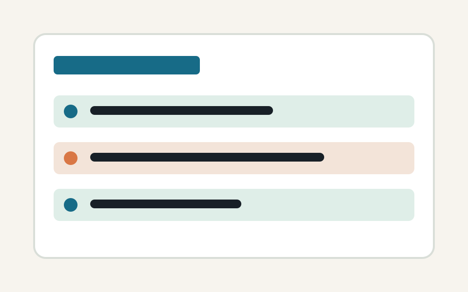
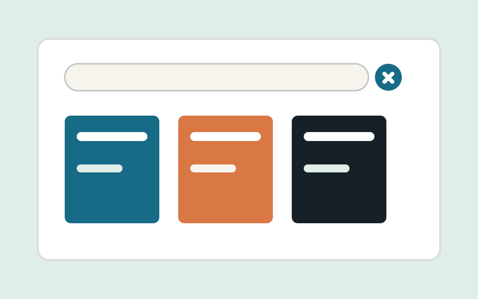
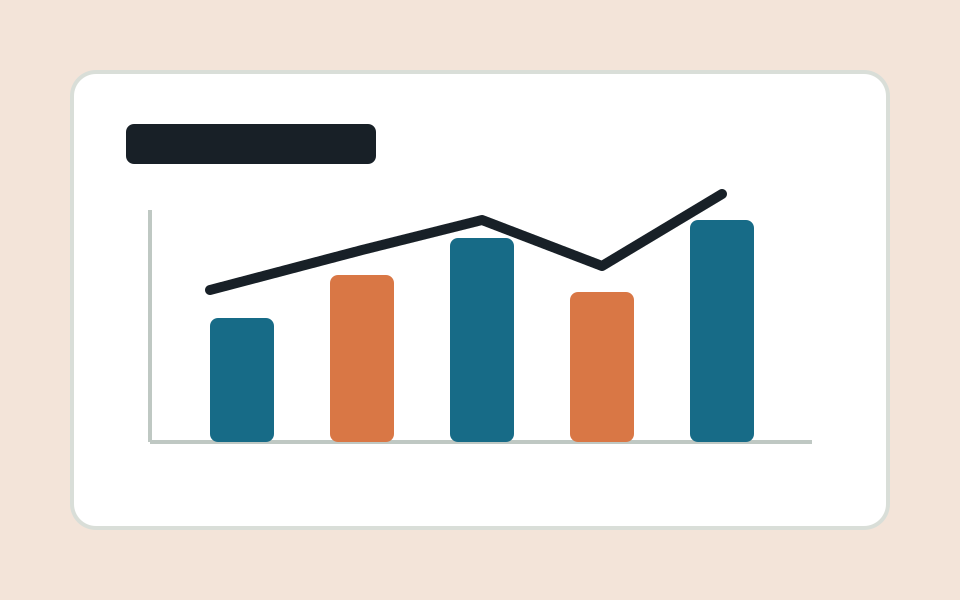

Student Task Planner
A browser-based planner for recording assignments, marking work as completed, and keeping personal academic tasks organized.
Open projectPortfolio
Selected coursework and personal projects that demonstrate problem solving.

A browser-based planner for recording assignments, marking work as completed, and keeping personal academic tasks organized.
Open project
A simulated web interface that helps students search for course books, view availability, and save useful references for later reading.
View repository
A prototype dashboard that visualizes grades across semesters and helps students understand academic performance trends.
View demo